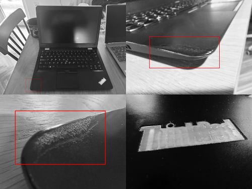
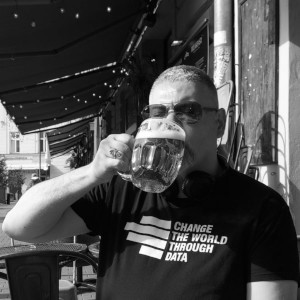

Devsify AI
Free, Open Educational Program in Data Science and Machine Learning
👾 APPLY() via this form
🤝 Completely online + in-person meetings for participants who choose to attend in Belgrade, Serbia
Since its founding in 2017, DataKolektiv has trained over 150 participants, at various levels, in knowledge and skills in the fields of Data Analytics, Data Science, Machine Learning, and AI (not counting the dozens of participants I have taught through my collaboration with Springboard, and who knows how many I have trained in mathematical statistics as an independent consultant over the years…). As the founder of DataKolektiv, I have decided that from the fall of 2024, all DataKolektiv educational programs will become free and open, available to everyone. Considering that DataKolektiv has never (nor will it in the future) used pre-recorded materials, this education, which we are now making available to all, will include direct work with me.
– Goran S. Milovanović, 3. November, 2024.
A Concise Manifesto
This course is entirely practically oriented; I have always had more trust in people who may not know something about a thing but know how to do that thing in practice. It goes without saying that in the intense technological environment where Data Science, Machine Learning, and AI operate, we seek exactly that: people who can complete tasks from start to finish, solve problems, and deliver solutions. This is the wavelength on which I am broadcasting this free, open course. All of this does not mean that theory is unimportant: on the contrary, if something is significant, theory is significant, and I will teach it intensively. However, unlike academic programs where you receive both what you need and a lot of content that you may never use, I will focus on applicable theory that will help you understand the solutions to the problems you need to tackle—and help you solve them. Also, I do not advise you to avoid academic programs; on the contrary, I believe that rigorous academic education is a great thing, but keep in mind what decades of experience in these fields have taught me: those who were first trained as scientists in some particular empirical field are always better than the “Swiss-knife” people who learn Data Science and Machine Learning methods to apply them to just anything. “Pure number crunchers” do not exist; without appropriate domain expertise, it is difficult or impossible to enter the top tier and be at the forefront in these fields. Domain expertise matters.
Program
With beginners, I focus on the basics of R and Python programming for Data Science and Machine Learning, followed by an introduction to probability theory, mathematical statistics, and information theory. N.B. I will use Python every now and then, but the focus of this program will be heavily on R. For intermediate and advanced participants, not necessarily in the following order, I focus on the following topics:
- Introductory and Advanced R programming
- Functional and Objective Programming in R
- The Tidyverse Approach
- Python for Data Science
- Probability and Information Theory
- Estimation Theory
- Optimization
- Parametric and Non-parametric Correlation
- (Multiple) Linear Regression
- Generalized
Linear Models
- Binomial
- Multinomial
- Poisson, Negative Binomial, Zero-inflated
- Tweedie
- Decision Trees
- Random Forests
- Gradient Boosted Trees
- Neural Networks w. Backpropagation
- Principal Component Analysis
- Singular Value Decomposition
- t-SNE dimensionality reduction
- Bayesian Estimation
- Latent Dirichlet Allocation(LDA)
- Causal Models for Parameter and Structure Learning
- Numerical Simulations
- Basic and Advanced Data Visualization:
- R integration with Generative AI
- R integration w. Microsoft Office
- Various Domain-specific Problems
- Mastering Your Linux OS for R and Python projects in Data Science
- R in Production Environments (testing, Docker and Docker Compose, deployment)
We have more than enough teaching materials, developed over the years at DataKolektiv for the following courses:
R Advanced Analytics This introductory R course provides a solid foundation in the most commonly used methods of supervised and unsupervised learning in data analytics; significant emphasis is placed on reporting and data visualization.
R Stats101 Bioinformatics Despite the name “Bioinformatics,” this is a course that should be taken by anyone interested in solidifying their knowledge of mathematical statistics, as the course focuses on probability theory and mathematical statistics.
DATA SCIENCE SESSIONS This, I can confidently say, legendary course within our R programmers and analysts community offers a thorough, comprehensive introduction to Data Science and Machine Learning. The Python version of the course, developed in collaboration with Aleksandar Cvetković and Ilija Lazarević: DATA SCIENCE SESSIONS :: Python Version
For complete beginners in R programming, I recommend the free course Introduction to R Programming for Data Analysis, which I conducted in collaboration with Startit:
Rules
Rule 01. Course Methodology. Each week, learning materials will be shared, and participants are expected to work on them independently over the following week, following my instructions and guidance. After one week, during an online session lasting between an hour and an hour and a half, I will explain all key aspects related to the topic covered. Sometimes, when introducing important new theoretical concepts, the session will take the form of Ex Cathedra teaching – though I try to avoid this as much as possible. What I greatly prefer, on the other hand, is interactive work and discussion. To achieve this, you need to prepare by studying the materials I will share in advance.
Rule 02. On datasets. The data used in the course will exclusively be data that I select and share with you. This will include data from Kaggle, various open data sources, a variety of datasets found through Google Dataset Search, as well as classic teaching datasets. Can you use your own data during the course? Of course not. You can learn with me how things are done and understood using the data I provide, and then you can apply that knowledge to any business or research problem of your choice.
Rule 03. Open Source. Everything we do is Open Source, full stop. I will be using the GNU General Public License (GPLv3).
Rule 04. Communication during the course. The only
communication channel I will use throughout the course is the
#data-science-4all channel on the DataKolektiv Slack
account, which all participants will be added to (if not already).
I will not be able to respond to emails. For those in
Belgrade or who visit occasionally, we can organize ad hoc
in-person meetings with or without laptops, as we agree. All other
communication will take place during the weekly online sessions. The
rules for communication are simple: (1) politeness, (2)
respect for everyone, (3) honesty, (4)
conciseness (there are many of us—groups consist of 30
participants each).
Rule 05. About the course program. I have specific, albeit broad, areas of specialization in Data Science, but I am by no means a jack-of-all-trades. Therefore, I design the course program and make decisions on when and what topics are covered. If someone has a suggestion for additional content, they will need to help find and involve an appropriate expert to assist us if it turns out that I am not knowledgeable about that topic, which, again, can easily happen.
Expectations
This open program does not provide any certificates or confirmations of participation. The program focuses solely on practice. Once you are faced with a Data Science problem — whether at work, out of sheer curiosity, in a job interview, at university, or during fundamental scientific work — nobody will ask whether you have a certificate or diploma if you can solve the problem.
The only ones I’ve seen who wanted to pursue Data Science and Machine Learning but didn’t succeed were those who didn’t listen to me when I advised them to practice a little each day. Learning programming and mathematics for these fields shares the same traits as learning any type of mathematics, any sport, or any musical instrument: there are concepts you need to understand and theory you need to learn, but if you don’t spend enough time practicing — no, you will not learn what you set out to learn. Again: a little every day. Repetitio est mater studiorum.
90% of what you do in this course will be your own independent work. Personally, and as a representative of DataKolektiv, I do not take any responsibility either (a) for your success in this course or how you feel about learning (or not learning), or (b) for any applications of what you learn in a professional, academic, or any other setting. I have literally educated hundreds of people in these disciplines from the USA to Asia: those who learned, learned on their own. I am here to assist, clarify, and push you forward. You are the key to success; it lies within you.
“Disciplina motivationem ad ientaculum devorat.”
(“Discipline eats motivation for breakfast.”)
– Ivan Minić, Pojačalo podcast.

These are photos of the Lenovo Thinkpad laptop I used between 2017 and 2022 while working on the Wikidata project with DataKolektiv. The red bounding boxes highlight the edge of the keyboard — where you rest your left hand when working. What looks like burn marks is actually the casing’s plastic dented by my hand. If you ever wonder how one succeeds in Data Science and Machine Learning—just remember this photo.
Tech Stack
I mainly use R. However, the whole zoo encompasses:
- R (beyond Tidyverse):
- Front-end: (Shiny, R Markdown - I use either the Open Source Shiny Server, or productionize with golem and scale with ShinyProxy via Docker); visualizations: ggplot2, Bokeh, Plotly, VisNetwork, igraph;
- Back-end/ML: data.table,
text2vec, maptpx, Rtsne, XGBoost, Matrix,
mclust,
xgboost:
Extreme Gradient Boosting, ordinal:
Regression Models for Ordinal Data and probably many more;
- Big Data and RDBS: Pyspark/Apache Spark, Hadoop/HiveQL, and MariaDB, typically for ETL from the WMF Data Lake and local project databases, and of course PostgreSQL;
- Python Data/ML: NumPy, pandas, scikit-learn (sklearn), SciPy, Matplotlib, Seaborn, Plotly;
- Standards: XML, JSON, RDF (code parameterizations, Wikidata dump processing);
- IDEs: of course RStudio is my favorite IDE, but also Visual Studio Code.
GitHub
- Goran: github.com/GoranMilovanovic
- DataKolektiv: github.com/datakolektiv
About me

In 2017, I founded DataKolektiv after nearly 25 years in academic and applied science and research. Between 2017 and 2022, I worked as a Data Scientist for Wikidata, one of the world’s largest and most complex Open Knowledge Bases, where I provided full-stack Data Science services. These services encompassed ETL/pre-processing in Big Data systems, machine learning, and creating custom dashboards for virtualized production environments using R and Python. More details can be found in my Wikidata Analytics System Repo.
DataKolektiv has also been at the forefront of innovation, offering expert consulting services to top Swiss banking institutions and global market research firms. It has played a crucial role in training numerous professionals in Data Analytics, Data Science, and Machine Learning across local and Western European markets. As one of the earliest consultancies to embrace Generative AI, we have guided others through this new technological era.
I have co-edited and co-authored five books on Internet user behavior and attitudes, which cover theoretical aspects of Information Society development and Internet Governance. My academic background includes significant research on human associative and semantic memory, concepts and categorization, statistical causal induction, and decision-making under risk. Collaborating with leading Cognitive Scientists in concept learning, my work was cited in The Stevens’ Handbook of Experimental Psychology, Volume 3. Language and Thought.
Programming has been a part of my life since 1984, beginning in the 8-bit era. At sixteen, I published my first review of a PASCAL compiler, and at nineteen, I wrote my first scientific paper in Cognitive Psychology. Since then, my career has intersected computer science, mathematical statistics, and social sciences.
Currently, I am the Chief AI Officer at smartocto. Outside of work, I am a proud father to two wonderful daughters, Sofija and Teodora. Playing the electric bass guitar (see motor skill learning) embodies my commitment to lifelong learning: ancora imparo (misattributed to Michelangelo Buonarroti). I maintain a modest collection of visual arts and co-manage the GEOMETRIJA project with my partner, Serbian painter and art history PhD Miona Marta Marković. The story of my journey was shared during my first meeting with Ivan Minić on the Pojačalo podcast.
👾 APPLY() via this form

Contact: goran.milovanovic@datakolektiv.com

Impressum
Data Kolektiv, 2004, Belgrade.